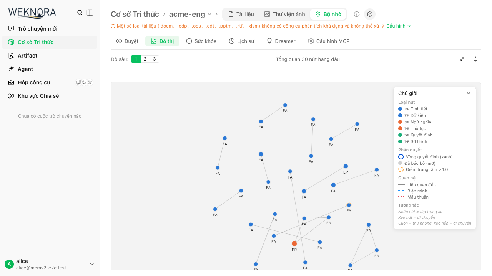
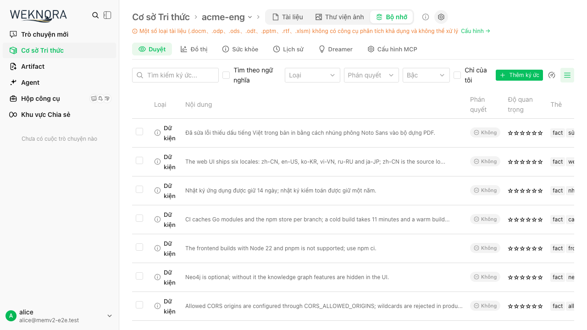

Memory V2 · Phase 7 · 18/10/2026
Kiểm chứng nhiều người dùng trên hệ thống thật
Kết luận tại checkpoint
Luồng Memory chính đã có bằng chứng thực thi qua MCP và giao diện. Các test hiện qua, nhưng chưa ký xác nhận hoàn tất toàn bộ kế hoạch production: một phần kiểm thử vận hành và backlog dependency vẫn còn cần xử lý hoặc quyết định rõ trước phát hành. Hàng đợi graph bền vững đã được bổ sung và kiểm chứng qua restart.
Không dùng kết quả smoke của mô hình 3B để suy ra chất lượng reasoning production. Không xem test xanh là chứng nhận không còn lỗ hổng bảo mật.
Kết quả đã đo
| Phép kiểm | Kết quả | Phạm vi |
|---|---|---|
| Playwright trên app thật | 17/17 qua | Qua trên host và chạy lại trên Compose (55,6 giây, không retry): duyệt, phân trang, keyword/hybrid, create/edit/delete, metadata/bulk, 409 hai tài khoản, graph zoom/pan/keyboard, history, dream preview, undo, chia sẻ và i18n. Seed/storage state của hai stack tách riêng. |
| Compose app / frontend / docreader | Qua | Build app/docreader từ nhánh, chạy đủ 5 services trên cổng riêng; fresh DB 114/900083 clean, seed bằng Ollama thật. MCP và UI qua; hậu kiểm 200 memory sống, 226 graph jobs done, 0 cạnh sai scope/deleted. Đã sửa harness đọc nhầm Alice state host trong lượt UI đầu; lượt chạy lại 17/17 qua. |
| Recall qua MCP | 45/49 = 91,8% | Lượt Compose mới: 15 test MCP qua trên DB seed riêng và Ollama thật, ngưỡng recall 80%. Lượt host trước đó 44/49. Còn miss về backup, token expiry và cross-lingual embedding. Model-outage và scheduled-Dreamer không chạy trong lượt Compose; đã kiểm chứng riêng trên host. |
| Ghi đồng thời | 5 × 50 lượt qua | Năm lần chạy riêng; mỗi lần 50 agents. Không có lỗi ghi; 10 lần gửi cùng một fact hội tụ về một ID. Dữ liệu test được dọn sau mỗi ca. |
| Dreamer theo lịch | 3 lượt thật qua | Engineering: 118 dòng sống trước/sau, hai ký ức được bảo vệ không đổi. Interval thử 5 giây đã trả về mặc định. |
| Frontend unit / type / build | 1.385 pass, 1 skip | Lượt sau nâng dependency và Health coverage: không fail, type-check/build qua. Native importance button được kiểm chứng riêng bằng UI; cần rerun build/unit trên candidate cuối sau các sửa tiếp theo. |
| Health closure / UI regression | Qua phạm vi đã đo | Corpus lexical 120 cặp EN/VI qua; PostgreSQL/race cho scope dimension, service/handler/workers qua. API engineering công bố scan 118/118, chỉ 32 assertion được hỗ trợ; 0 contradiction candidates thay cho false alerts cũ. UI thêm coverage/error/retry. Một ca importance từng flaky do click bị nuốt khi saving; đã sửa button disabled, ca đó qua 5 lần và suite 19/19 qua không retry. Renderer browser regression riêng cũng qua. |
| Frontend dependency audit | 0 entries | Fresh full và omit-dev audit đều 0; dependency tree hợp lệ. Bộ KaTeX 0.18.10 / marked-katex-extension 5.1.13 / Mermaid 12.2.0 tương thích, không ép peer. Browser thật render math/diagram và tiếng Việt, loại event handlers/javascript links; unit renderer/type/build đã qua. |
| Backend PostgreSQL + race | Qua | Repository, service, workers, handler, router, container, MCP server, config, database. Bao gồm rollback audit, budget nhiều caller và race protected verdict. |
| Fresh / upgrade / backfill | 114 / 900083, clean | DB mới và clone E2E dựng lại mốc 900081 đều nâng cấp qua. Re-embed ba dòng legacy bằng model thật, giữ nguyên 118 ký ức và dữ liệu do người dùng ghi. |
| Graph queue / restart | Qua | 200 job backfill hoàn tất; job pending sống qua restart rồi hoàn tất khi bật worker. Không có cạnh chéo scope hoặc cạnh sống tới memory đã xóa. Có regression lease takeover, generation fencing, 24 caller claim 12 job, rollback enqueue và Relink retry job hết lượt. |
| Dreamer crash / lease recovery | Qua | SIGKILL app E2E khi đang giữ lease; app mới không chiếm lease còn hạn, chờ tự hết hạn 5 phút rồi hoàn tất scheduled pass. Số dòng sống và protected rows không đổi, không có cạnh sai scope/deleted; tags sentinel và interval 6h được khôi phục. |
| Docreader Compose / gRPC thật | Qua phạm vi parser | Build và chạy docreader trong project isolated memv2-release-gate; health probe sẵn sàng, ListEngines/Read/ReadStream qua với Markdown tiếng Việt UTF-8. Phép kiểm này xác minh parser độc lập; không suy ra mọi định dạng tài liệu hoặc luồng upload đều đã được kiểm chứng. |
| Scale / soak (host E2E) | Qua 10.000 + 60 phút | Ba tenant tổng hợp, vector bge-m3 thật (fixture đi qua giao dịch create+audit+queue sản xuất, không bỏ qua dedup ingestion để đo ingestion). Tầng 2.000 và 10.000 memory: đọc không model 10 req/s p95 44 ms / p99 91 ms (43.107 lượt, 0 lỗi); MCP 1/10/25/50 phiên có model, p95 recall ≤ 661 ms, save ≤ 2,07 s; soak 60 phút ở 25 phiên: 34.823 thao tác, 1 lỗi chưa xác định nguyên nhân (0,003%, dưới ngưỡng 0,1%; log server không có ERROR/5xx — harness lúc đó chưa ghi lớp lỗi, đã bổ sung). 0 probe cross-tenant đọc được (8.686 bị từ chối), queue drain, 0 cạnh sai, dòng được bảo vệ nguyên vẹn, mọi save được ACK đều truy xuất và có audit. RSS/goroutines/heap/kết nối PG không tăng. Chỉ chứng minh profile đo trên host này (Docker 2 CPU / 11,7 GiB, 1 replica, giới hạn ghi E2E), không phải năng lực production. |
| Candidate cuối: hồi quy đầy đủ | Qua (trừ Dreamer quality) | Go race trên PostgreSQL/ParadeDB thật, 36 package ok; validate migration postgres/sqlite OK; frontend 1.385 pass / 0 fail, type-check qua, audit 0. Host: 15 MCP qua (recall 45/49 = 91,8%), 20/20 UI không retry, Dreamer theo lịch 4→7 lượt (118 dòng không đổi, 2 protected không đổi), queue restart, metrics RBAC, SIGKILL lease recovery qua. Baseline sau chạy: 200 memory, quyền fixture khôi phục. |
| Metrics API thật | Qua | Anonymous 401, tenant Owner 403, SystemAdmin 200; thu hồi quyền trả lại 403 ngay. Nhãn chỉ gồm worker/outcome/operation/phase/le, không có tenant/KB/query/content/token. Quyền fixture được khôi phục sau ca kiểm. |
| Model outage / token rotation | Qua | Model lỗi trả 503 rõ ràng, recall còn BM25. Token sai/cũ trả 401; endpoint tắt trả 403; rotation chặn cả MCP session đã initialize. |
Bộ dữ liệu có 201 đầu vào EN/VI; một near-duplicate được giữ lại cho test, tạo baseline 200 dòng sống: engineering 118, HR 44, Beta 28, Gamma 10. Accounts, tenants và nội dung trong bằng chứng đều là dữ liệu giả lập.
Các lỗi được phát hiện khi kiểm chứng
- UI không biên dịch: sửa nhiều child độc lập trong KeepAlive thành chuỗi điều kiện hợp lệ; thêm build thật ngoài vue-tsc.
- Quyền và state: tách quyền Memory khỏi quyền sở hữu tài liệu; reset cache theo user/tenant/KB; chặn response cũ; reload 409 đóng editor cũ thay vì giữ draft lỗi.
- Graph: gắn event sau khi canvas async thực sự xuất hiện, cleanup observer/listener, tự fit, hỗ trợ bàn phím, chống NaN từ importance âm và giảm nhãn chồng lấn. Overview giới hạn 30 nút được ghi rõ.
- Audit nguyên tử: tạo/sửa/xóa và audit nằm trong cùng giao dịch. Test gây lỗi INSERT audit xác nhận memory và relations cùng rollback.
- Merge/undo: khóa và so phiên bản tất cả participants; giữ metadata snapshot; re-embed trước khi restore; phục hồi vector và graph trong cùng giao dịch cho audit mới.
- Tranh chấp: optimistic lock dùng đầy đủ microsecond; UPDATE/DELETE có SQL guard nếu người dùng vừa bảo vệ verdict. Near-merge retry trên snapshot mới; khi vẫn tranh chấp, giữ fact riêng thay vì ghi đè.
- Worker: mất heartbeat làm hủy pass; ledger PostgreSQL giữ budget tenant/ngày qua restart và nhiều replica. Pruner giữ tier 0; decay đi qua service có audit; bỏ cache cũ có cleanup goroutine không dừng.
- Provenance: không so vector legacy chưa rõ model như thể tương thích. Admin relink re-embeds đúng model; keyword recall vẫn hoạt động trong lúc chờ backfill.
- MCP config: không chọn endpoint tắt hoặc endpoint home-only cho KB được chia sẻ; token cũ không được hiện lại khi đổi scope.
Bằng chứng giao diện
Ảnh từ Playwright MCP trên thế giới test. Không chứa MCP bearer token hoặc thông tin người dùng thật. Đã kiểm tra bổ sung bằng Playwright MCP: Admin/Contributor và Beta editor-share có nút tạo, Viewer và Beta viewer-share không có; Beta → Gamma và Gamma → Acme đều bị API từ chối 403. Lượt exploratory bổ sung đã tìm keyword tiếng Việt (5 kết quả, page reset về 1), tạo memory 201, sửa nội dung 200, thấy audit tạo/sửa thật và xóa qua confirm 200; memory thử đã được dọn. Các ca conflict/CRUD đầy đủ được kiểm chứng trong spec; không tuyên bố mọi ca đều đã được thao tác lại thủ công bằng MCP.


Phần chưa đóng trước production sign-off
- Độ trễ graph: write path vẫn thử auto-link đồng bộ, bên cạnh hàng đợi retry bền vững. Chưa tối ưu thành đường ghi hoàn toàn async; không dùng kết quả này để cam kết latency cho KB lớn.
- Security scope: gate audit frontend đã về 0 sau vá dependency; đó không phải chứng nhận mọi dependency của Go/Python hoặc mọi đường khai thác đã được kiểm toán.
- Môi trường: host và Compose stack đã chạy thật; Compose có MCP, UI và docreader gRPC parser smoke. Chưa clone một DB develop/production thực của người dùng; chỉ dùng DB E2E và clone E2E, không coi đó là kiểm chứng dữ liệu production thực.
- Giới hạn bằng chứng: scale/soak chỉ trên một replica, một host và dữ liệu tổng hợp; chưa có kiểm chứng DB develop/production thực (chưa được cấp quyền) và chưa replay độc lập mọi role/use case qua Playwright MCP.
- Phạm vi Health: đã sửa false positive, DB-error-as-healthy và coverage ẩn. Detector mới chỉ tạo ứng viên từ assertion lexical đơn giản cùng chủ thể/KB, không phân xử semantic hoặc dịch chéo ngôn ngữ. Scan/issue cap và check không hỗ trợ phải được đọc cùng kết quả; zero findings không chứng minh toàn KB khỏe mạnh.
- Dreamer quality — đạt cho model đã pin, chưa đạt cho model local 3B: corpus 100 positive/100 abstain EN/VI, chấm trên hành động đã áp dụng và audit. Sau khi prompt nêu rõ
typetừng action (giao thức Anthropic không chuyển schema):ds/deepseek-v4-pro(qua giao thức Anthropic, ai-box.vn, do chủ sở hữu liệt kê) đạt development 85/100 positive, precision 98,8%, 0 vi phạm; hold-out đóng băng 85/100, precision 96,6%, 0 vi phạm an toàn → Qualified cho đúng model này. wip 26/26, gotcha 26/26, merge 24/24, importance chỉ 9/24 (development) và 9/24 (hold-out). Không đạt: mimo-v2.6-flash (47/68, dừng sớm), ds/deepseek-flash (48/69, dừng sớm), glm-5.1 (12/24, lỗi nhà cung cấp, chưa kết luận), Qwen2.5-3B (46%). Đây là bằng chứng cho một model hosted với corpus tổng hợp; chưa có quyết định production cho model, dữ liệu gửi ra ngoài và chi phí. - Chọn model theo KB (migration 900084,
GET/PUT /memories/settings, UI Memory → Dreamer → Models): Dreamer và tác vụ text dùng model đã chọn, không chọn thì dùng model tóm tắt của KB. Model Dreamer đã chọn nếu mất hiệu lực thì fail-closed (bỏ qua lượt, chạy tay trả 503), không rơi về model khác. Cấu hình production dự kiến (KB = ds/deepseek-flash, Dreamer = ds/deepseek-v4-pro) đạt gate development 86/100 positive, precision 100%, 0 vi phạm; cả 272 lượt gọi Dreamer đều tới v4-pro. Trích xuất thực thể mặc định tắt nên đường model text chưa có lượt gọi thật trong gate này. Hồi quy sau thay đổi (host): Go race trên PostgreSQL, migrate validate postgres/sqlite, migration smoke fresh/upgrade lên 900084, MCP 16 test, UI 22/22 không retry, scheduled Dreamer 8→11 lượt (118 hàng, 2 protected không đổi), queue, metrics RBAC, Dreamer SIGKILL; baseline 200 memory, Alice không phải SystemAdmin. Compose/docreader chưa chạy lại (không bị ảnh hưởng). - Đóng rủi ro trước release (2026-10-18/19):
- Cấu hình production dự kiến (KB = ds/deepseek-flash, Dreamer = ds/deepseek-v4-pro qua setting theo KB), trên bản cuối: development 90/100 positive, precision 97,8%; hold-out 86/100, precision 96,6%, Qualified; 0 vi phạm an toàn cả hai. Sai lầm còn lại: 3 ca hold-out nhãn "tăng importance" bị gán gotcha (nội dung mô tả nguy cơ mất dữ liệu) — ranh giới mơ hồ, không phải vi phạm; importance là loại yếu nhất (10–14/24).
- Batch kích thước production (gate mới
TestDreamerBatchQuality, 4 KB × 30 memory, mỗi KB một ngôn ngữ, 5 cơ hội + 25 ca phải giữ nguyên): 18/20 positive, precision 100%, 0 vi phạm, 20–44 s và 2–4,5k token output mỗi lượt. - Lỗi tìm thấy bằng model thật và đã sửa: (1) prompt không nêu
typenên giao thức Anthropic (không chuyển schema) làm mọi action bị loại; (2) model suy luận ăn hết trần 2.000 token → batch thật 0 đề xuất mà vẫn bị đánh dấu "đã rà": nay phản hồi bị cắt làm lượt lỗi, batch giữ nguyên chờ rà, token tính theo usage thật (gồm suy luận), trần mặc định 16.000; (3) client model không có timeout → provider treo giữ lock mãi: nay giới hạn 5 phút/lượt Dreamer, 3 phút/batch trích xuất; (4) frontend chạy Dreamer tay timeout 30 s → nâng 6 phút; (5) extractor không parse JSON trong code fence. Đã thử batch 10 nhưng làm circuit breaker (max(3, 0,34×batch)) chặn cả lượt, nên giữ batch 30 và không đổi breaker. - Đường model văn bản thật: setting Text = deepseek-flash điều khiển trích xuất thực thể qua đường patch có audit trên PostgreSQL (EN/VI), khác model tóm tắt KB.
- Diễn tập backup/restore (
restore_smoke.sh, DB E2E 317 MB, dump nén 14–18 MB): dump 2–3 s, restore 5–6 s; số hàng, hash nội dung/vector, audit, quan hệ, queue, trạng thái Dreamer, ngân sách, setting và phiên bản migration trùng khớp; server khởi động trên bản restore và trả cùng kết quả list/search/settings/health. Không suy ra RTO/RPO cho DB thật. - Hồi quy cuối trên bản cuối: Compose (MCP recall 45/49, UI 22/22, docreader), Go race 34 package, migrate validate, migration smoke fresh/upgrade 900084, host MCP 16 test (recall 44/49), UI 22/22 không retry, scheduled Dreamer 12→15 (118 hàng, 2 protected không đổi), queue, metrics RBAC, Dreamer SIGKILL, restore; baseline 200 memory; Alice không phải SystemAdmin. Frontend: type-check, 1.385 unit, build, audit 0/0.
- Soak trên bản cuối (10.000 hàng bge-m3 thật, 3 tenant, 60 phút sau tăng tải 1/10/25/50 phiên MCP): 80.162 thao tác, 0 lỗi (lỗi chưa rõ của lần trước không lặp lại); đọc p95 109 ms/p99 626 ms; đường có model p95 cao nhất 5,96 s; 8.626 thăm dò cross-tenant đều bị chặn; queue rút hết; RSS/kết nối PG/goroutine/heap không tăng (giữa vs cuối: 141/140 MB, 13/13, 131/128, 50/50 MB). Chỉ đúng cho một replica trên host này.
- Candidate đóng băng: HEAD f145bff1 + 133 file thay đổi/mới, sha256
8fdd67aad106552a0e993ac3071f7f5fb4cdd54c979dbbfd0cef6c1d96fe1f69(không tính file báo cáo này). Mọi gate ở trên chạy trên đúng bản này; sửa thêm phải chạy lại gate bị ảnh hưởng. - Sau candidate (3 việc vận hành): (1) Health báo
dreamer_model_unavailable(high) khi Dreamer không có model dùng được, metricblocked_model_unavailable; (2) hoàn tác cả một lượt Dreamer theorun_id(POST /memories/dream/undo, KB Admin, nút trong tab Dreamer), bỏ qua ký ức đã bị sửa sau lượt, chạy lại không đổi gì; (3) README/config/metric help khớp code,dreamer.model_idđánh dấu deprecated. Bằng chứng: Go race 10 package + ParadeDB integration (hoàn tác verdict/importance/merge, giữ sửa của người) qua; migrate validate qua; E2E model thật ds/deepseek-v4-pro: 4 thay đổi, hoàn tác 3, giữ 1 ký ức người dùng sửa sau, Health báo khi xóa model, chạy tay 503, xóa lựa chọn hết cảnh báo; Playwright 25/25 không retry (thêm 3 ca mới); frontend unit 1.385, type-check, build, audit 0; baseline 200 ký ức, Alice không SystemAdmin. Candidate digest ở trên không còn đúng: cần tính lại khi đóng băng bản mới. - Duyệt UI thật bằng Playwright MCP: section Mô hình (vi-VN), dropdown chỉ chat model, lối tắt thêm mô hình, model bị xóa → cảnh báo + chạy tay 503, xóa lựa chọn khôi phục; đã dọn sạch dữ liệu thử.
- Lịch sử cũ: merge audit trước khi lưu relation snapshot không thể phục hồi chính xác graph lịch sử. Audit mới có snapshot; text restore cũ vẫn được hỗ trợ.
Không push, không mở PR và không triển khai production nếu chưa có xác nhận của người dùng.
Chạy lại bằng chứng
make memory-e2e-up make memory-e2e-seed make memory-e2e-test # Kiểm chứng upgrade + backfill trên clone E2E ./e2e/memory_v2/migration_smoke.sh # Graph intent sống qua restart (chỉ host stack E2E) ./e2e/memory_v2/queue_smoke.sh # Quyền metrics API thật (chạy riêng; tự khôi phục quyền fixture) python3 -I e2e/memory_v2/metrics_smoke.py # Dreamer SIGKILL / natural lease expiry (chạy riêng, khoảng 5 phút) python3 -I e2e/memory_v2/dreamer_restart_smoke.py # Regression PostgreSQL/ParadeDB + race WEKNORA_TEST_POSTGRES_DSN='<isolated test DSN>' \ WEKNORA_TEST_PARADEDB=1 go test -race \ ./internal/application/repository/memory_v2 \ ./internal/application/service/memory_v2/...
Hướng dẫn đầy đủ: e2e/memory_v2/README.md. Test storage state, seed bearer tokens, trace và log nằm trong các đường dẫn Git-ignore; không đưa vào bằng chứng chia sẻ.